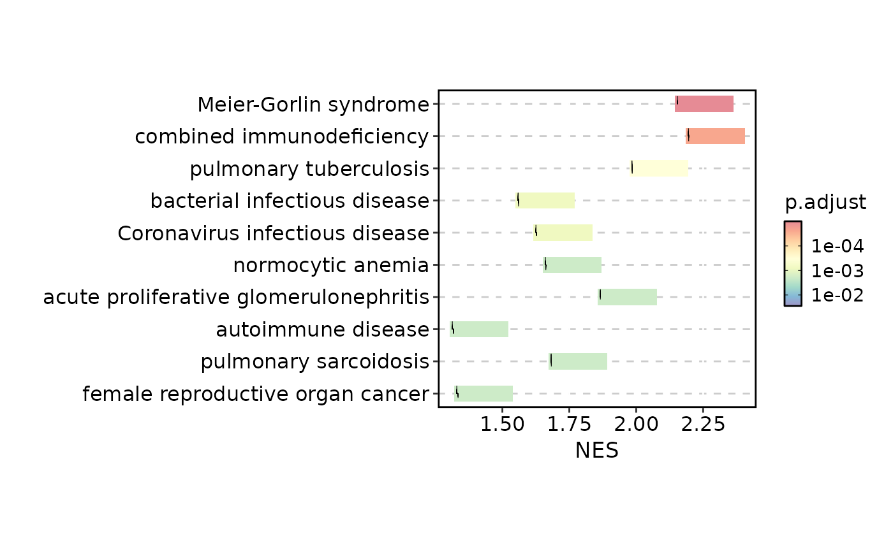
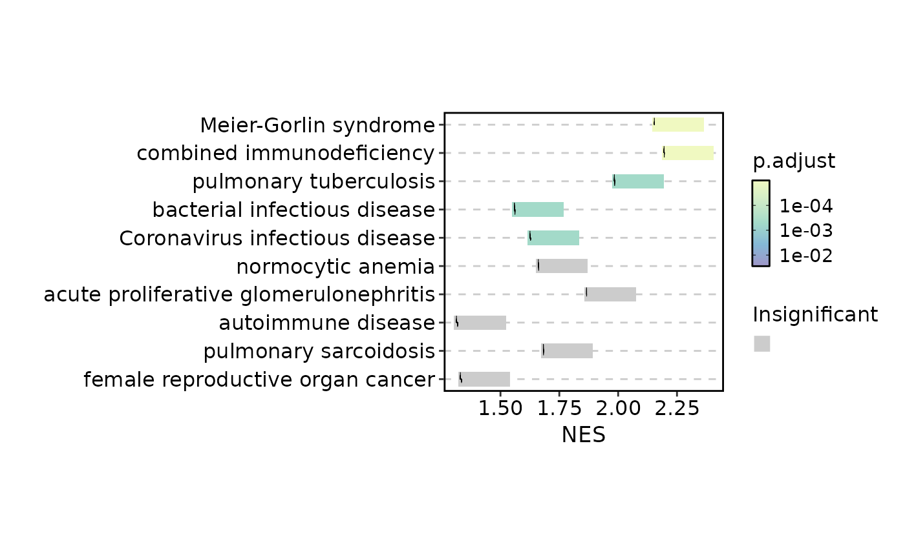
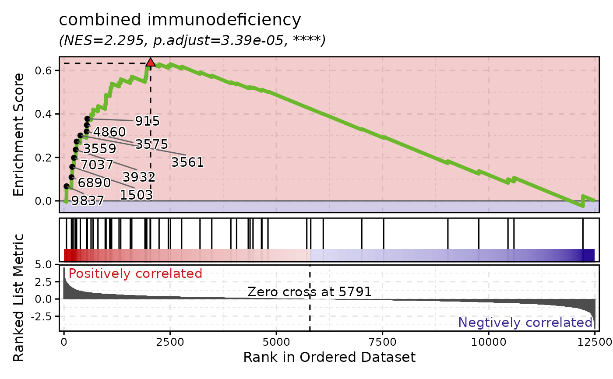
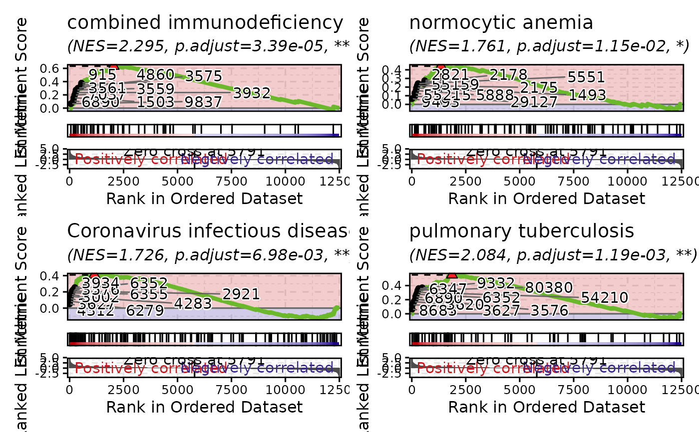

GSEASummaryPlotis used to plot a summary of the results of a GSEA analysis.GSEAPlotis used to plot the results of a GSEA analysis.
Usage
GSEASummaryPlot(
data,
in_form = c("auto", "dose", "fgsea"),
gene_ranks = "@gene_ranks",
gene_sets = "@gene_sets",
top_term = 10,
metric = "p.adjust",
cutoff = 0.05,
character_width = 50,
line_plot_size = 0.25,
metric_name = metric,
nonsig_name = "Insignificant",
linewidth = 0.2,
line_by = c("prerank", "running_score"),
title = NULL,
subtitle = NULL,
xlab = NULL,
ylab = NULL,
alpha = 0.6,
aspect.ratio = 1,
legend.position = "right",
legend.direction = "vertical",
theme = "theme_this",
theme_args = list(),
palette = "Spectral",
palcolor = NULL,
seed = 8525,
...
)
GSEAPlot(
data,
in_form = c("auto", "dose", "fgsea"),
gene_ranks = "@gene_ranks",
gene_sets = "@gene_sets",
gs = NULL,
sample_coregenes = FALSE,
line_width = 1.5,
line_alpha = 1,
line_color = "#6BB82D",
n_coregenes = 10,
genes_label = NULL,
label_fg = "black",
label_bg = "white",
label_bg_r = 0.1,
label_size = 4,
title = NULL,
subtitle = NULL,
xlab = NULL,
ylab = NULL,
combine = TRUE,
nrow = NULL,
ncol = NULL,
byrow = TRUE,
seed = 8525,
axes = NULL,
axis_titles = axes,
guides = NULL,
design = NULL,
...
)Arguments
- data
A data frame of GSEA results For example, from
DOSE::gseDO(). Required columns areID,Description,NES,p.adjust,pvalue. TheIDcolumn is used to match the gene sets.- in_form
The format of the input data
fgsea: The input data is from thefgseapackage.dose: The input data is from theDOSEpackage.auto: Automatically detect the format of the input data. When "leadingEdge" is in the input data, it will be treated as "fgsea"; otherwise, if "core_enrichment" is in the input data, it will be treated as "dose".
- gene_ranks
A numeric vector of gene ranks with genes as names The gene ranks are used to plot the gene sets. If
gene_ranksis a character vector starting with@, the gene ranks will be taken from the attribute ofdata.- gene_sets
A list of gene sets, typically from a record of a GMT file The names of the list should match the
IDcolumn ofdata. Ifgene_setsis a character vector starting with@, the gene sets will be taken from the attribute ofdata. The GSEA plots will be plotted for each gene set. So, the number of plots will be the number of gene sets. If you only want to plot a subset of gene sets, you can subset thegene_setsbefore passing it to this function.- top_term
An integer to select the top terms
- metric
The metric to use for the significance of the terms Typically the column name of p values or adjusted p values. It is also used to select the top terms.
- cutoff
The cutoff for the significance of the terms The terms will not be filtered with this cutoff; they are only filtered by the
top_termranked by themetric. The cutoff here is used to show the significance of the terms on the plot. For the terms that are not significant, the color will be grey.- character_width
The width of the characters in the y-axis
- line_plot_size
The size of the line plots
- metric_name
The name of the metric to show in the color bar
- nonsig_name
The name of the legend for the nonsignificant terms
- linewidth
The width of the lines in the line plots
- line_by
The method to calculate the line plots.
prerank: Use the gene ranks as heights to plot the line plots.running_score: Use the running score to plot the line plots.
- title
A character string specifying the title of the plot. A function can be used to generate the title based on the default title. This is useful when split_by is used and the title needs to be dynamic.
- subtitle
A character string specifying the subtitle of the plot.
- xlab
A character string specifying the x-axis label.
- ylab
A character string specifying the y-axis label.
- alpha
A numeric value specifying the transparency of the plot.
- aspect.ratio
A numeric value specifying the aspect ratio of the plot.
- legend.position
A character string specifying the position of the legend. if
waiver(), for single groups, the legend will be "none", otherwise "right".- legend.direction
A character string specifying the direction of the legend.
- theme
A character string or a theme class (i.e. ggplot2::theme_classic) specifying the theme to use. Default is "theme_this".
- theme_args
A list of arguments to pass to the theme function.
- palette
A character string specifying the palette to use. A named list or vector can be used to specify the palettes for different
split_byvalues.- palcolor
A character string specifying the color to use in the palette. A named list can be used to specify the colors for different
split_byvalues. If some values are missing, the values from the palette will be used (palcolor will be NULL for those values).- seed
The random seed to use. Default is 8525.
- ...
Additional arguments.
- gs
The names of the gene sets to plot If
NULL, all gene sets ingene_setswill be plotted.- sample_coregenes
A logical value to sample the core genes from the core_enrichment; if
FALSE, the firstn_coregeneswill be used- line_width
The width of the line in the running score plot
- line_alpha
The alpha of the line in the running score plot
- line_color
The color of the line in the running score plot
- n_coregenes
The number of core genes to label
- genes_label
The genes to label. If set,
n_coregeneswill be ignored- label_fg
The color of the label text
- label_bg
The background color of the label
- label_bg_r
The radius of the background color of the label
- label_size
The size of the label text
- combine
Whether to combine the plots into one when facet is FALSE. Default is TRUE.
- nrow
A numeric value specifying the number of rows in the facet.
- ncol
A numeric value specifying the number of columns in the facet.
- byrow
A logical value indicating whether to fill the plots by row.
- axes
A string specifying how axes should be treated. Passed to
patchwork::wrap_plots(). Only relevant whensplit_byis used andcombineis TRUE. Options are:'keep' will retain all axes in individual plots.
'collect' will remove duplicated axes when placed in the same run of rows or columns of the layout.
'collect_x' and 'collect_y' will remove duplicated x-axes in the columns or duplicated y-axes in the rows respectively.
- axis_titles
A string specifying how axis titltes should be treated. Passed to
patchwork::wrap_plots(). Only relevant whensplit_byis used andcombineis TRUE. Options are:'keep' will retain all axis titles in individual plots.
'collect' will remove duplicated titles in one direction and merge titles in the opposite direction.
'collect_x' and 'collect_y' control this for x-axis titles and y-axis titles respectively.
- guides
A string specifying how guides should be treated in the layout. Passed to
patchwork::wrap_plots(). Only relevant whensplit_byis used andcombineis TRUE. Options are:'collect' will collect guides below to the given nesting level, removing duplicates.
'keep' will stop collection at this level and let guides be placed alongside their plot.
'auto' will allow guides to be collected if a upper level tries, but place them alongside the plot if not.
- design
Specification of the location of areas in the layout, passed to
patchwork::wrap_plots(). Only relevant whensplit_byis used andcombineis TRUE. When specified,nrow,ncol, andbyroware ignored. Seepatchwork::wrap_plots()for more details.
Examples
# \donttest{
data(gsea_example)
GSEASummaryPlot(gsea_example)

GSEASummaryPlot(gsea_example, line_by = "running_score")
GSEASummaryPlot(gsea_example, cutoff = 0.01)

# }
# \donttest{
GSEAPlot(gsea_example, gene_sets = attr(gsea_example, "gene_sets")[1])

GSEAPlot(gsea_example, gene_sets = attr(gsea_example, "gene_sets")[1:4])

# }